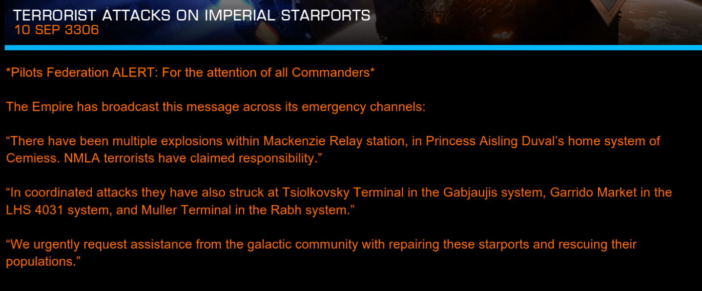
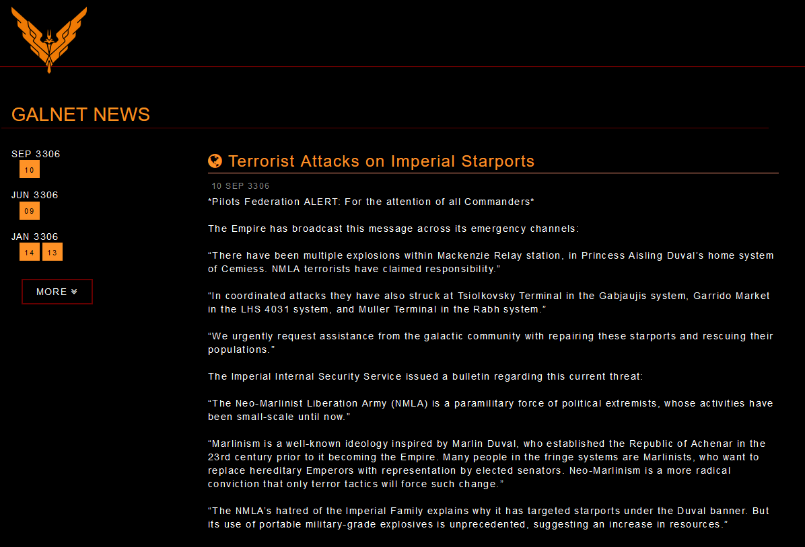
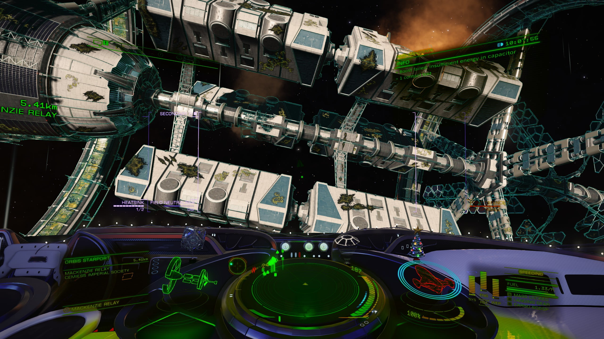
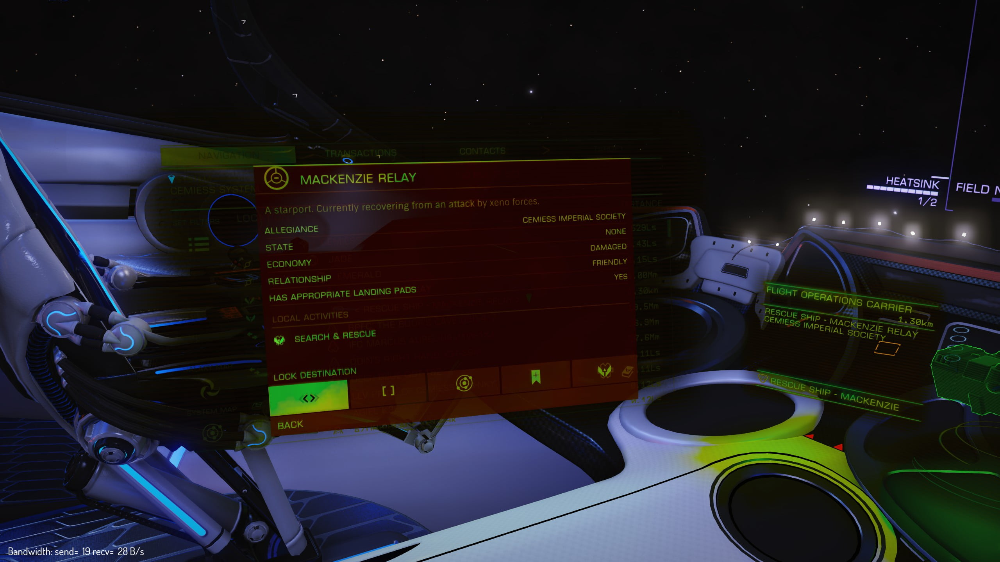

Canonn Interstellar would like to offer condolences to all those killed or injured in today’s attacks.
We were first alerted to the attacks by a Thargoid Activity report which was hastily taken down after NMLA claimed responsibility.

Galnet news published the following statement, the first new news item in quite some considerable time

On the face of it, this seems like another of those tedious local wars. However on investigation, we discovered that the starports show signs of the characteristic green thargoid corrosion damage.

The station status screen announces that the starport is currently recovering from a Thargoid attack.

So something does not appear as it seems. There are no other signs of Thargoid activity and the Eagle Eye network is not showing any new activity.
Our conclusion is that either NMLA are claiming responsibility for what was actually a Thargoid attack and the Thargoids have melted away. Or the NMLA have somehow got hold of Thargoid weaponry and used it in the attack.
Given that there are signs of Thargoid involvement but no sign of Thargoids currently in the area. We have raised the alert level to Yellow.
We would like to thank commander Factabulous and The 1st Doctor for collecting evidence dislayed in this article.
On an totally unrelated matter, we would like to remind consumers of our delicious Gnosis Biscuits and Gnosis Gin, that they should not be stored in close proximity and that Canonn Interstellar accepts no liability for any loss or damage incurred as a result of improper handling.